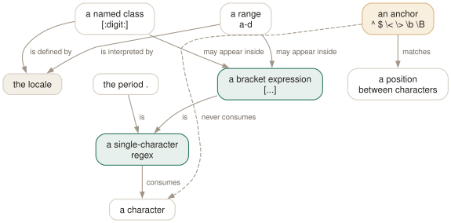

Day 03
Matching one character
Bracket expressions, named classes, and the anchors that match nothing at all.
By the end of today you can
- put
],^and-literally inside a bracket expression without escaping anything - explain why an anchor is not a character and what that costs you
- choose between
-w,\<...\>and a hand-written bracket expression for a word boundary
Everything is built from one-character matchers
A regular expression is a stack of two ideas. The bottom one — today — is a handful of ways to say “one character, from this set”. The top one, tomorrow, is a handful of ways to say “this thing, repeated, or that thing instead”. Almost every grep that goes wrong goes wrong at the bottom.
Most characters match themselves. The period matches any single character. A bracket expression matches one character from an explicit set. That is the whole inventory, and everything else on this page is either a shorthand for a bracket expression or an anchor, which is a different animal entirely.

\<[[:upper:]] is one assertion and one character — and it is why adding ^ to a pattern never changes what -o prints.Bracket expressions, and their three awkward characters
Inside [...] most metacharacters lose their powers: [.] is a literal dot, [*] a literal star. Three characters keep a meaning, and all three are disarmed by position rather than by backslashes.
]- Closes the expression — unless it is the very first character, where it is a literal.
[]]matches a right bracket. ^- Negates the set — but only as the first character.
[b^]matches abor a caret. -- Forms a range — but only with a character on each side. Put it last (or first) and it is a literal hyphen:
[x-].
$ printf 'a]b\na-b\na^b\n' | grep '[]^-]'
a]b
a-b
a^b
One bracket expression, three literals, no escapes. Learning that []^-] is legal saves you from the backslash-counting that most people fall into.
Named classes, and the error you will make
The twelve named classes are [:alnum:], [:alpha:], [:blank:], [:cntrl:], [:digit:], [:graph:], [:lower:], [:print:], [:punct:], [:space:], [:upper:] and [:xdigit:]. The brackets in those names are part of the name, so they always appear inside a bracket expression of your own.
$ grep '[:digit:]' /etc/passwd
grep: character class syntax is [[:space:]], not [:space:]
$ echo $?
2
grep detects this specific mistake and says so, which is unusually kind of it — without the check, [:digit:] would silently be “one of the characters :digit”, and you would spend an afternoon on it. The correct form is [[:digit:]], and a class can sit alongside other members: [[:digit:]a-fA-F].
Anchors match nothing, and that is the point
An anchor is a zero-width assertion: it matches a position between characters rather than a character. ^ and $ are the line boundaries. GNU adds four word anchors, and the difference between them is worth getting right once.
\<- The position at the start of a word — a non-word character (or line start) on the left, a word character on the right.
\>- The position at the end of a word. The mirror image.
\b- Either edge.
\bfoo\band\<foo\>agree on ordinary words, and\bis the one other tools also understand. \B- A position that is not a word edge. Useful for finding an identifier fragment in the middle of longer names.
$ echo 'foo foobar' | grep -o '\<foo\>'
foo
$ echo 'foo foobar' | grep -o '\Bfoo'
$ echo $?
1
The second one finds nothing: both occurrences of foo begin at a word edge, which is exactly what \B forbids. Note also that \w is defined as [_[:alnum:]] — it includes the underscore, and so do all four word anchors. That is the same definition -w uses, so grep -w foo and grep '\<foo\>' agree.
Today's habit
When a grep returns more than you expected, the first thing to suspect is an unescaped .. When it returns less, the first thing to suspect is a word boundary you did not know included underscores.
# ~/grep-recipes.sh
#
# Day 3: the three awkward literals, no escapes needed.
grep '[]^-]' file # matches ] or ^ or -
# Day 3: portable, locale-proof character sets.
grep '[[:digit:]]\{1,3\}\.' file # classes, not [0-9]; ranges are unspecified
# Day 3: blank lines, and lines that are only whitespace.
grep -c '^$' file
grep -c '^[[:space:]]*$' file
New vocabulary
Options
| Option | Does |
|---|---|
. | Match any single character. Whether it matches an encoding error is unspecified. |
[abc] | Match one character from the list. |
[^abc] | Match one character not in the list. The ^ must come first. |
[a-d] | A range. In the C locale, ASCII order; elsewhere the standard says it is unspecified. |
[[:digit:]] | A named class. The outer brackets are yours, the inner ones are part of the name. |
^ and $ | Anchor to the start and end of a line. They match a position, not a character. |
\< and \> | Anchor to the start and end of a word. A GNU extension. |
\b and \B | Anchor at, and not at, a word edge. \b is either edge; \< is only the left. |
\w and \W | Shorthand for [_[:alnum:]] and [^_[:alnum:]]. Note the underscore. |
Drillsdo these in a real terminal, today
Self-check
Answer out loud first, then unfold.
You want lines containing a version number like 1.2.3 so you write grep '[0-9].[0-9].[0-9]'. It matches 1x2y3 and, more annoyingly, sha256. What went wrong, and what is the minimal fix?
The unescaped . matches any character, so the pattern really says “digit, anything, digit, anything, digit”. sha256 has 2, 5, 6 with nothing between them — but . needs a character to consume, so what actually matched there was a longer window in the surrounding text.
The minimal fix is grep '[0-9]\.[0-9]\.[0-9]'. The tidier fix is a bracket expression, '[0-9][.][0-9][.][0-9]', because inside brackets the dot has no special meaning at all and you never have to think about backslashes again.
Inside a bracket expression, why is [a^-] three literal characters while [^a-] is a negation of two?
Because position is the entire syntax. ^ negates only when it is the first character after [; anywhere else it is a literal caret. - forms a range only when it has a character on both sides; last (or first) it is a literal hyphen. And ] closes the expression unless it is first, in which case it is a literal bracket.
So []^-] is the set of those three awkward characters, written with no escapes at all. Backslash is not the mechanism here — inside brackets most metacharacters simply lose their meaning, which is why [.] and [*] are the cleanest way to write a literal dot or star.
Why does grep -c '^$' file work at all, when the pattern contains no characters to match?
Because anchors do not consume characters — they assert something about a position. ^ asserts “we are at the start of the line”, $ asserts “we are at the end”, and on a blank line both are true of the same position, so the pattern matches the empty string there.
This is also why grep -o '^' prints nothing useful and why -w and \b can be combined freely: adding a zero-width assertion never changes how much text the match covers, only whether the match is allowed.
The manual page warns that outside the C locale, [a-d] “might be equivalent to [abcd] or [aBbCcDd] or some other bracket expression”. You test it on your machine and it behaves sensibly in every locale. Is the warning wrong?
Not wrong — out of date for this C library. On glibc 2.42 the range [a-d] matches exactly abcd in both C and en_US.UTF-8; the collation-order behaviour the page describes is not what you get.
The warning is about portability, and there it still stands: POSIX leaves the behaviour unspecified, other libcs have made other choices, and the fact that your machine is well-behaved tells you nothing about the container your script will eventually run in. Where it matters, say LC_ALL=C or write the set out as [abcd]. Named classes like [[:lower:]] are the portable way to mean a range.
Cheat sheet
. any one character (the #1 source of false positives - escape it)
[abc] one of a, b, c [^abc] one character that is NOT
[a-d] a range; POSIX says unspecified outside the C locale
[[:digit:]] a named class - the INNER brackets are part of the name
alnum alpha blank cntrl digit graph lower print punct space upper xdigit
# the three awkward literals - fixed by POSITION, never by backslash
[]] ] must be first [b^] ^ anywhere but first [x-] - must be last
# anchors: match a POSITION, consume no characters
^ $ line start / line end (in BRE, literal anywhere else)
\< \> word start / word end \b either edge \B not an edge
\w \W [_[:alnum:]] and its complement - note the UNDERSCORE
Everything through Day 03
Commands
| Command | Does |
|---|---|
grep root /etc/passwd | Search one named file. No filename prefix on the output. |
grep root /etc/passwd /etc/group | Search several. Output gains a file: prefix automatically. |
grep root | No file operand: read standard input. From a terminal, this waits for you. |
grep -r root | No file operand and -r: search the working directory instead. |
cmd | grep root - | A file operand of - is standard input, mixable with real files. |
echo $? | Read the status grep just returned. The habit this whole day is about. |
grep -e -v file.txt | Search for the literal string -v. -e protects a pattern that starts with a dash. |
grep -f patterns.txt data.txt | Take patterns from a file, one per line. The workhorse for long lists. |
cut -f1 ids.csv | grep -f - data.txt | Patterns from a pipe. -f - reads them from standard input. |
Options
| Option | Does |
|---|---|
-V, --version | Print the version and exit. Know which grep you are actually running. |
--help | Print the option summary and exit. Shorter and better organised than the man page. |
-- | End of options. Everything after it is a pattern or a filename, never a flag. |
-i, --ignore-case | Match regardless of case. What counts as “the same letter” depends on the locale. |
--no-ignore-case | Cancel an earlier -i. The last of the two on the line wins. |
-v, --invert-match | Select the lines that did not match. Applied once, after all patterns. |
-w, --word-regexp | Require the matched substring to be bounded by non-word characters or line ends. |
-x, --line-regexp | Require the match to be the entire line. Silently overrides -w. |
-e PAT, --regexp=PAT | Add a pattern. Repeatable, and combinable with -f. |
-f FILE, --file=FILE | Add every line of FILE as a pattern. An empty file matches nothing at all. |
-y | Undocumented synonym for -i. In neither the man page nor --help, but 3.12 accepts it. |
. | Match any single character. Whether it matches an encoding error is unspecified. |
[abc] | Match one character from the list. |
[^abc] | Match one character not in the list. The ^ must come first. |
[a-d] | A range. In the C locale, ASCII order; elsewhere the standard says it is unspecified. |
[[:digit:]] | A named class. The outer brackets are yours, the inner ones are part of the name. |
^ and $ | Anchor to the start and end of a line. They match a position, not a character. |
\< and \> | Anchor to the start and end of a word. A GNU extension. |
\b and \B | Anchor at, and not at, a word edge. \b is either edge; \< is only the left. |
\w and \W | Shorthand for [_[:alnum:]] and [^_[:alnum:]]. Note the underscore. |